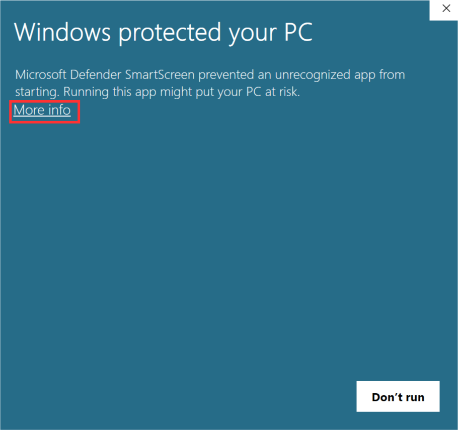

Jika notifikasi tersebut muncul, pilih More Info lalu tekan tombol Run anyway untuk melanjutkan proses instalasi.


Download installer melalui tautan berikut
Jalankan BerkatiSetup.msi yang sudah didownload.
Mungkin akan muncul notifikasi peringatan dari Windows untuk instalasi perangkat lunak dengan sumber 'Unknown' tergantung konfigurasi keamanan komputer anda.
Jika notifikasi tersebut muncul, pilih More Info lalu tekan tombol Run anyway untuk melanjutkan proses instalasi.
Tampilan awal installer tampak seperti gambar berikut. Anda hanya perlu melanjutkan proses instalasi dengan menekan tombol Next > dan membiarkan semua pengaturan default.
Jika instalasi berhasil, akan muncul tampilan berikut. Anda bisa menekan tombol Close untuk keluar dari installer.
Jika perangkat anda belum terinstall .NET Desktop Runtime, notifikasi berikut akan muncul. Anda bisa menekan tombol Yes untuk memulai instalasi .NET Desktop Runtime. Ikuti semua tahapan instalasi .NET Desktop Runtime. Jika sudah, anda dapat kembali melanjutkan instalasi aplikasi Berkati.